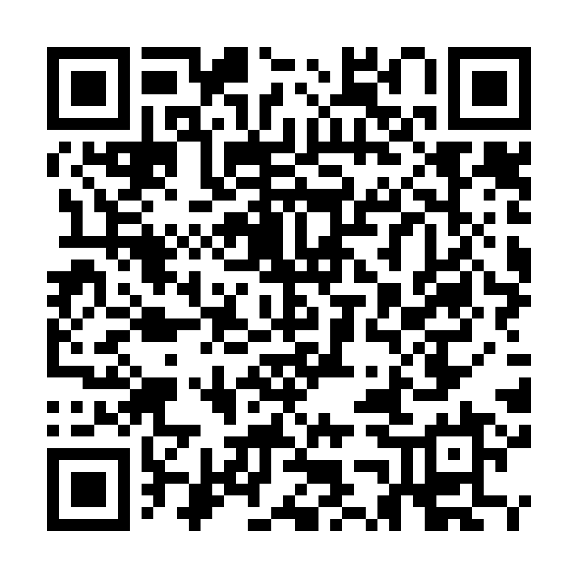

Diffusion
Espace réservé aux présentateurs du groupe 24-5.
Entrer
Aller à la lecture libre
Prêt à diffuser ?
Hors direct
Lancer la diffusion
Retour à l’accueil
En direct
‹ Précédent
Suivant ›
Mettre en pause
QR code
Plein écran
Arrêter la diffusion
Scannez pour suivre la présentation en direct

Copier le lien
Commencer la présentation